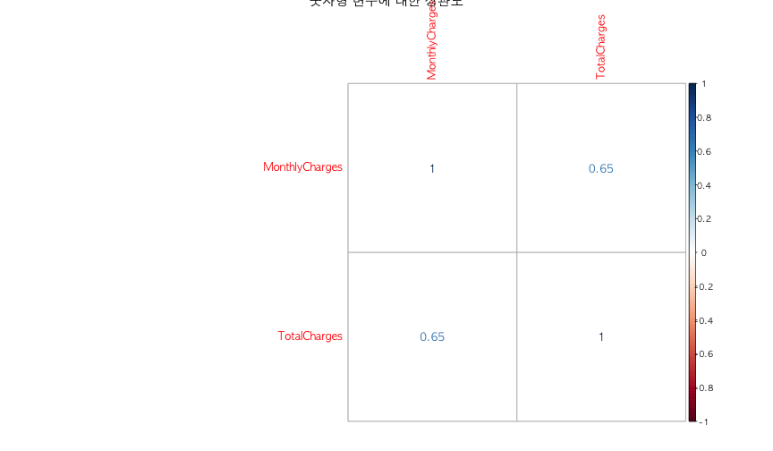
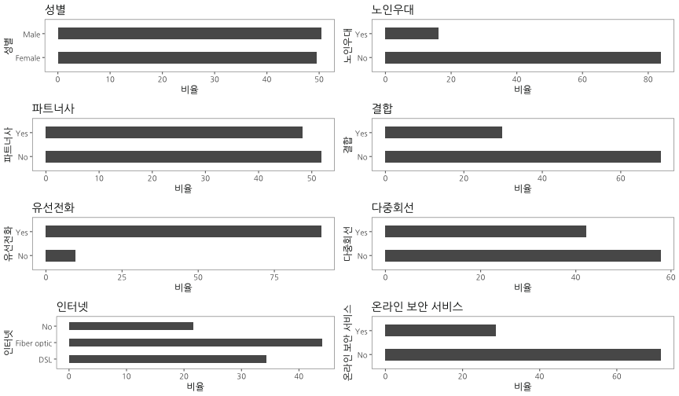
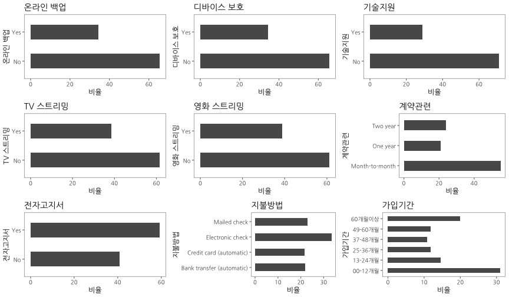

xwMOOC 기계학습
고객 이탈(churn) - 탐색적 데이터 분석(EDA)
데이터 가져오기 및 전처리
고객이탈 WA_Fn UseC_ Telco Customer Churn.csv 데이터를 웹사이트에서 바로 불러들인다.
그리고 나서 skimr 팩키지 skim 함수를 통해 전반적인 데이터 현황을 살펴보고 나서, 전처리에 대한 전략을 수립한다. 전처리 전략에 바탕을 두고 차근차근 데이터 전처리 작업을 진행한다.
# 0. 환경설정 --------------------------------------------------------------
# library(tidyverse)
# library(corrplot)
# library(gridExtra)
# library(ggthemes)
# library(caret)
# library(randomForest)
# library(party)
# library(purrr)
# library(extrafont)
# library(forcats)
# library(skimr)
# library(doParallel)
# loadfonts()
# 1. 데이터 가져오기 --------------------------------------------------------------
# churn_dat <- read_csv("https://community.watsonanalytics.com/wp-content/uploads/2015/03/WA_Fn-UseC_-Telco-Customer-Churn.csv")
# 2. 데이터 전처리 --------------------------------------------------------------
## 2.0. 현황파악 --------------
skim(churn_dat)Numeric Variables
# A tibble: 4 x 13
var type missing complete n mean sd min `25% quantile`
<chr> <chr> <dbl> <dbl> <dbl> <dbl> <dbl> <dbl> <dbl>
1 Month… nume… 0 7043 7043 6.48e⁺¹ 3.01e⁺¹ 18.2 35.5
2 Senio… inte… 0 7043 7043 1.62e⁻¹ 3.69e⁻¹ 0 0
3 tenure inte… 0 7043 7043 3.24e⁺¹ 2.46e⁺¹ 0 9.00
4 Total… nume… 11.0 7032 7043 2.28e⁺³ 2.27e⁺³ 18.8 401
# ... with 4 more variables: median <dbl>, `75% quantile` <dbl>,
# max <dbl>, hist <chr>
Character Variables
# A tibble: 17 x 9
var type complete missing empty n min max n_unique
<chr> <chr> <dbl> <dbl> <dbl> <dbl> <dbl> <dbl> <dbl>
1 Churn charac… 7043 0 0 7043 2.00 3.00 2.00
2 Contract charac… 7043 0 0 7043 8.00 14.0 3.00
3 customerID charac… 7043 0 0 7043 10.0 10.0 7043
4 Dependents charac… 7043 0 0 7043 2.00 3.00 2.00
5 DeviceProtec… charac… 7043 0 0 7043 2.00 19.0 3.00
6 gender charac… 7043 0 0 7043 4.00 6.00 2.00
7 InternetServ… charac… 7043 0 0 7043 2.00 11.0 3.00
8 MultipleLines charac… 7043 0 0 7043 2.00 16.0 3.00
9 OnlineBackup charac… 7043 0 0 7043 2.00 19.0 3.00
10 OnlineSecuri… charac… 7043 0 0 7043 2.00 19.0 3.00
11 PaperlessBil… charac… 7043 0 0 7043 2.00 3.00 2.00
12 Partner charac… 7043 0 0 7043 2.00 3.00 2.00
13 PaymentMethod charac… 7043 0 0 7043 12.0 25.0 4.00
14 PhoneService charac… 7043 0 0 7043 2.00 3.00 2.00
15 StreamingMov… charac… 7043 0 0 7043 2.00 19.0 3.00
16 StreamingTV charac… 7043 0 0 7043 2.00 19.0 3.00
17 TechSupport charac… 7043 0 0 7043 2.00 19.0 3.00
## 2.1. 변수 결측값 --------------
map(churn_dat, ~ sum(is.na(.))) %>% keep( function(x) x > 0)$TotalCharges
[1] 11
churn_dat <- churn_dat %>%
filter(complete.cases(TotalCharges))
## 2.2. 주요 변수 Recode --------
churn_dat <- churn_dat %>%
mutate(OnlineSecurity = ifelse(OnlineSecurity =="No internet service", "No", OnlineSecurity),
OnlineBackup = ifelse(OnlineBackup =="No internet service", "No", OnlineBackup),
DeviceProtection = ifelse(DeviceProtection =="No internet service", "No", DeviceProtection),
TechSupport = ifelse(TechSupport =="No internet service", "No", TechSupport),
StreamingTV = ifelse(StreamingTV =="No internet service", "No", StreamingTV),
StreamingMovies = ifelse(StreamingMovies =="No internet service", "No", StreamingMovies),
MultipleLines = ifelse(MultipleLines =="No phone service", "No", MultipleLines))
churn_dat %>% select(OnlineSecurity, OnlineBackup, DeviceProtection, TechSupport, StreamingTV, StreamingMovies, MultipleLines) %>%
purrr::map(., table)$OnlineSecurity
No Yes
5017 2015
$OnlineBackup
No Yes
4607 2425
$DeviceProtection
No Yes
4614 2418
$TechSupport
No Yes
4992 2040
$StreamingTV
No Yes
4329 2703
$StreamingMovies
No Yes
4301 2731
$MultipleLines
No Yes
4065 2967
churn_dat <- churn_dat %>%
mutate(tenure_grp = case_when( tenure <= 12 ~ "00-12개월",
tenure <= 24 ~ "13-24개월",
tenure <= 36 ~ "25-36개월",
tenure <= 48 ~ "37-48개월",
tenure <= 60 ~ "49-60개월",
tenure > 60 ~ "60개월이상"))
churn_dat <- churn_dat %>%
mutate(SeniorCitizen = ifelse(SeniorCitizen == 0, "No", "Yes"))
## 2.3. 무의미한 변수 제거 --------
churn_dat <- churn_dat %>%
select(-customerID, -tenure)
## 2.4. 자료형 변환 --------
churn_df <- map_if(churn_dat, is.character, as.factor) %>%
as_data_frame()
## 2.5. 데이터 내보내기 - 저장 --------
# dir.create("data_processed")
# saveRDS(churn_df, "data_processed/churn_df.rds")탐색적 데이터 분석(EDA)
데이터를 숫자형 데이터와 범주형 데이터로 나눠서 연속형 변수의 경우 상관관계를 corrplot 팩키지를 통해 탐색적으로 분석하고, 범주형 변수는 “고객이탈” 변수와 교차분석을 막대그래프로 수행하여 살펴본다.
# 2. 탐색적 데이터 분석(EDA) --------------------------------------------------------------
## 2.1. 상관 분석
numeric_var <- map(churn_df, is.numeric) %>% keep(., function(x) x == TRUE) %>% names
churn_df %>%
select(numeric_var) %>%
cor() %>%
corrplot(main="숫자형 변수에 대한 상관도", method="number")
## 2.2. 단변량 분석
barplot_univariate <- function(df, var, var_name) {
ggplot(df, aes_string(x=var)) +
geom_bar(aes(y = 100*(..count..)/sum(..count..)), width = 0.5) +
labs(x=var_name, y="비율", title=var_name) +
coord_flip() +
theme_few(base_family = "NanumGothic")
}
uni_p1 <- barplot_univariate(churn_df, "gender", "성별")
uni_p2 <- barplot_univariate(churn_df, "SeniorCitizen", "노인우대")
uni_p3 <- barplot_univariate(churn_df, "Partner", "파트너사")
uni_p4 <- barplot_univariate(churn_df, "Dependents", "결합")
uni_p5 <- barplot_univariate(churn_df, "PhoneService", "유선전화")
uni_p6 <- barplot_univariate(churn_df, "MultipleLines", "다중회선")
uni_p7 <- barplot_univariate(churn_df, "InternetService", "인터넷")
uni_p8 <- barplot_univariate(churn_df, "OnlineSecurity", "온라인 보안 서비스")
grid.arrange(uni_p1, uni_p2, uni_p3, uni_p4, uni_p5, uni_p6, uni_p7, uni_p8, ncol=2)
uni_p9 <- barplot_univariate(churn_df, "OnlineBackup", "온라인 백업")
uni_p10 <- barplot_univariate(churn_df, "DeviceProtection", "디바이스 보호")
uni_p11 <- barplot_univariate(churn_df, "TechSupport", "기술지원")
uni_p12 <- barplot_univariate(churn_df, "StreamingTV", "TV 스트리밍")
uni_p13 <- barplot_univariate(churn_df, "StreamingMovies", "영화 스트리밍")
uni_p14 <- barplot_univariate(churn_df, "Contract", "계약관련")
uni_p15 <- barplot_univariate(churn_df, "PaperlessBilling", "전자고지서")
uni_p16 <- barplot_univariate(churn_df, "PaymentMethod", "지불방법")
uni_p17 <- barplot_univariate(churn_df, "tenure_grp", "가입기간")
grid.arrange(uni_p9, uni_p10, uni_p11, uni_p12, uni_p13, uni_p14, uni_p15, uni_p16, uni_p17, ncol=3)